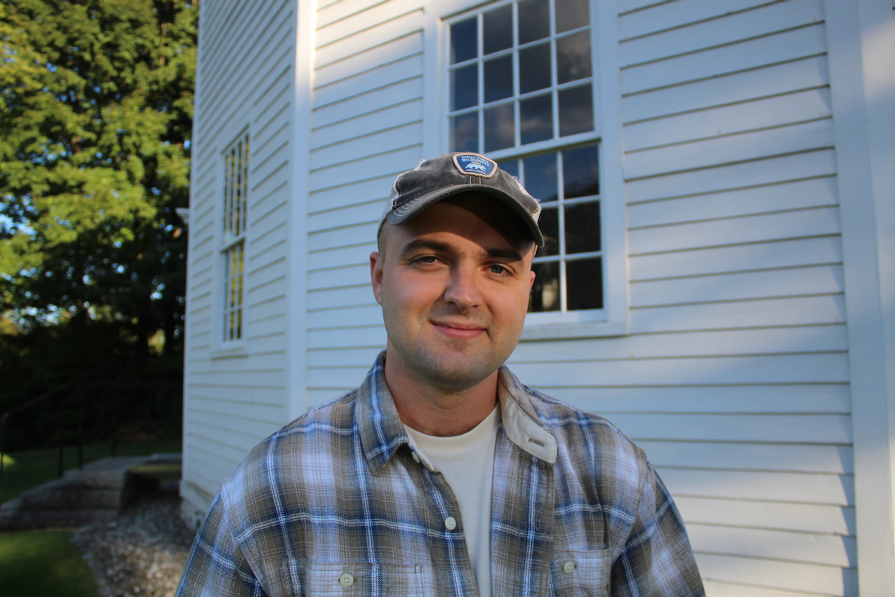

Hello! My name is Will. I live in Burlington, VT, and I'm researching machine learning applications for flood prediction while working on my M.S. in Complex Systems and Data Science at the University of Vermont. I'm also a pole vault coach and avid bluegrass guitarist! Check out my work experience, projects, and some of the other fun stuff I've got brewing on this site!
I made this site with GitHub Pages. To see how I did it or some of my programming projects, see my GitHub. Also, here's my LinkedIn, although my resume/C.V. is generally more up to date.
